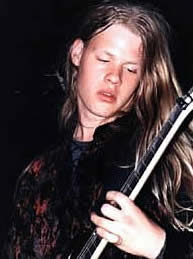
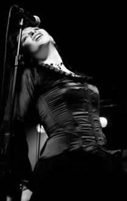

Entrevista
de Anders Hidle à Rafael Sartori e Flávio Borges
Como o álbum Ashes tem sido recebido pelos fãs e por que demorou tanto a ser lançado? De maneira geral o álbum tem sido recebido muito bem. Parece que as pessoas gostaram que mudamos o som uma vez mais, mas ao mesmo tempo ressalto que também estamos buscando os antigos elementos básicos do nosso som. Por outro lado algumas pessoas não aceitaram esta mudança e não gostaram de como nosso som se desenvolveu. Mas em comum entre estes dois grupos foi que todos ficaram surpresos com agressividade e de como este álbum vai direto ao ponto. Eu fico contente com o fato de termos pegado todo mundo de surpresa seja no bom ou no mal sentido. Estamos sempre nos desenvolvendo e nunca gravaremos o mesmo disco duas vezes. É impossível para eu dizer como será nosso próximo álbum, mesmo já estando trabalhando em algumas idéias. É um processo que cria sua própria vida. Já sobre a demora no lançamento de Ashes, o disco demorou porque logo após a longa turnê do World of Glass nós decidimos tirar umas férias de shows e trabalhar apenas na composição das novas músicas. Como estávamos entre dois contratos não tínhamos pressa. Além disso, precisávamos cuidar da parte chata de estar em uma banda, isto é, contratos. Tínhamos que decidir por qual gravadora lançaríamos o álbum e trabalharíamos no futuro, e isso leva tempo.
Quais são as principais diferenças entre o novo álbum e World of Glass, lançado em 2001? Para mim Ashes é o passo natural do Tristania, mesmo tendo coisas similares que marcam a sonoridade da banda, os dois álbuns são bem diferentes. Estou muito contente que tenhamos tomado uma nova direção com Ashes. O álbum é mais direto em seu som e não com muitos elementos diferentes como no caso de World of Glass. O som deste álbum é mais orgânico e mais direto ao ponto. Ashes também é mais bombástico, mais de um modo mais orgânico.
Como é trabalhar as composições em um grupo de sete pessoas. Todos participam do processo? Tudo começa comigo e Einar trabalhando em idéias simples. Juntos fazemos o esqueleto da música - um arranjo básico. Após este processo a banda inteira passa a participar. Em especial Kenneth e os três vocalistas para podermos tentar diferentes soluções para as músicas. Muitas vezes testamos três vocais diferentes na mesma parte da música antes de escolhermos com qual trabalhar. Muitas pessoas achariam complicado trabalhar em um processo como esse com sete pessoas, mas temos trabalhado muito bem assim, como se formássemos uma corrente. Ashes é o resultado deste trabalho em grupo, mais do que nunca toda banda esteve envolvida.
O número de bandas com vocal feminino tem aumentado muito nestes anos, como o Tristania lida com isso? Nós apenas fazemos nossa música enquanto os outros fazem a deles. Pessoalmente eu acho que muitas das bandas góticas típicas soam iguais. Parece que todo o gênero se tornou unidimensional após o "boom" do Gothic Metal no final dos anos noventa. Eu pessoalmente não ouço a maioria destas bandas. Para mim a música se torna interessante quando existe uma mistura de gêneros que acaba com as fronteiras entre os diferentes estilos.
A banda ainda tem alguma relação com o ex-vocalista Morten Veland? O que você acha do Sirenia, banda que ele montou após deixar o Tristania? Sim, alguns dos membros do Tristania tem contato com ele. O Sirenia não é algo que queríamos fazer com o Tristania, e também não é algo que eu escutaria em casa, mas sempre achei Morten um músico e compositor muito talentoso. Acho que a separação foi boa para os dois lados. Ele faz o que quer no Sirenia e nós no Tristania.
O Tristania tocou no Brasil há três anos atrás o que você se lembra daquela turnê? Nunca esquecerei aquele show, foi pura mágica, mais de 2000 brasileiros loucos foram nos ver em São Paulo e foi um dos nossos shows mais memoráveis. Estou louco para tocar aí de novo, desta vez serão quatro shows, estamos esperando por isso há muito tempo.
Como será dividir o palco com bandas mais extremas como Kreator e Krisiun? Eu não tenho nenhum problema com isso. Apesar de termos um som um pouco diferente, acho que formamos um pacote interessante. Pessoalmente eu gosto de ir a shows com bandas de diferentes sonoridades, mas, com uma coisa em comum: o Metal. Será igual a quando abrimos a turnê do Nightwish na Europa mês passado. Mesmo nosso som sendo mais extremo que o do Nightwish, em minha opinião, a combinação ficou muito boa e parece que a maioria do público aprovou.
Com muita gente na banda vocês devem ter diferentes influências, quais são as bandas que vocês curtem em comum e as mais diferentes? Nós temos muitas influências, de Emperor a Tom Waits. Todos temos a mente aberta quanto a música, ouvimos muitos estilos diferentes My Dying Bride, Samael, Nine Inch Nails, Radiohead, David Bowie, Nick Cave, Emperor e Seigmen são exemplos de bandas que a maioria de nós ouve.
Quais são os planos futuros para a banda? Existe algum projeto para um DVD ao vivo ou algo parecido? Nós estamos no meio de uma turnê extensa e tivemos até agora apenas três dias para descansarmos em casa, Stavanger, antes de irmos para a América Latina. Estamos mais ou menos em um "tour non-stop" há mais ou menos dois meses. Após isso vamos para casa trabalhar o novo disco e nos preparar para os festivais na Europa. Já estamos confirmados para o Zillo, Wacken Open Air, Summer Breeze e Wave Gotik Trefffen - e ainda terá mais. Após o verão vamos fazer novas turnês (provavelmente EUA) e trabalhar mais no novo material. Acho que lançaremos um DVD no futuro, mas, não existem planos concretos. Temos que ter certeza que teremos material necessário e de boa qualidade para lançarmos um DVD. A maioria das bandas só lança DVDs com lixo, para mim é um insulto aos fãs.
Deixe uma mensagem para os fãs e para os leitores do Rock Online. Muito obrigado pelo apoio de vocês. O Brasil sempre foi especial para o Tristania. Nossa última vez (janeiro de 2002) foi maravilhosa, os fãs são extremamente devotados. Estamos ansiosos para voltar e espero que vocês estejam gostando de Ashes. Vejo vocês nos shows.
Extraída de www.rockonline.com.br
|